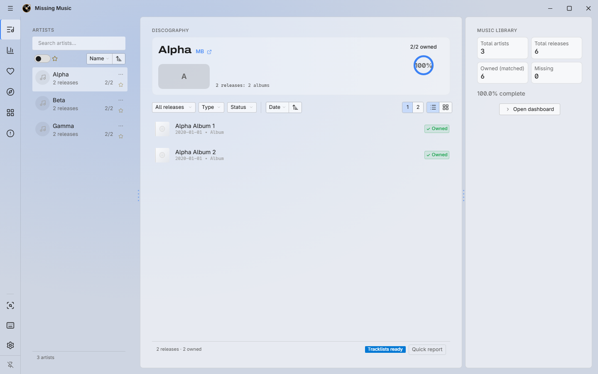
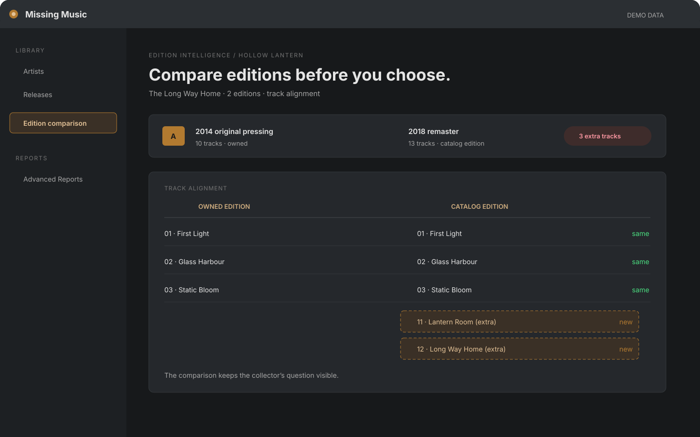
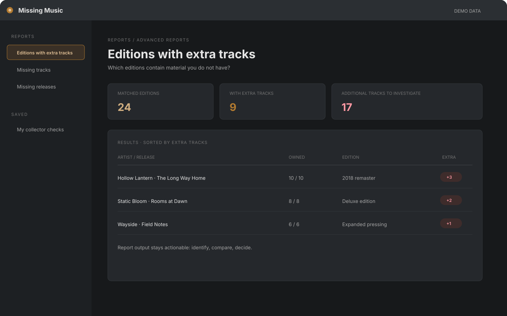
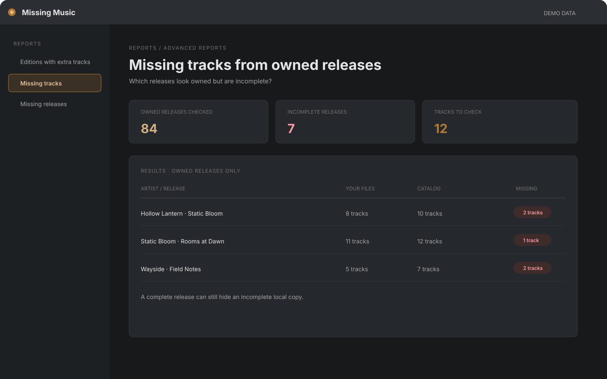

For collectors who own the music.
You built the library. This finds the gaps.
See every release you own, the ones you're missing, and the editions that differ — without touching a file or a tag.
Full Pro features on 10 artists · no account, ads, or subscription. Verify SHA-256

Owned and missing in one discography. Start from the folders you already have.
Every release in the discography, including the holes.
A complete discography puts every release in context, so the gaps stand out.
-
H✓
Hollow Lantern 2014 · LP
Owned
-
S✓
Static Bloom 2016 · LP
Owned
-
W✓
Wayside 2017 · EP
Owned
-
◌♥
Copper Season 2019 · LP · Missing
Missing, on your Wishlist
-
N✓
Night Ferry 2020 · Single
Owned
-
G✓
Grain & Static 2022 · LP
Owned
-
◌
Tidal Maps 2023 · EP · Missing
Missing
-
K✓
Live at Kelvin Hall 2024 · LP
Owned
- ✓ Owned
- ◌ Missing
- ♥ On your Wishlist
Some pressings have more. This finds them.
Compare editions track by track. Two reports other tools skip:
- Editions with extra tracks. Albums with a deluxe, remaster, or expanded edition you do not have.
- Missing tracks from owned releases. Albums that look owned but are missing tracks.
Lidarr downloads. Picard and SongKong rewrite tags. Missing Music shows the difference, then gets out of the way.

Compare before you decide. A pressing, remaster, or reissue can be materially different. Illustrated with demo data.

Editions with extra tracks. Identify the releases worth investigating. Illustrated with demo data.

Missing tracks from owned releases. Find incomplete copies that look owned. Illustrated with demo data.
Try it on 10 of your artists.
The demo is full Pro on 10 artists.
Free demo
£0
10-artist scan · full Pro
Try edition comparison and advanced reports on a small library.
Download the demo
Pro
£25
2 machines · one-time
Most collectors choose this
Find pressings with bonus tracks, spot incomplete copies, and more.
See Pro